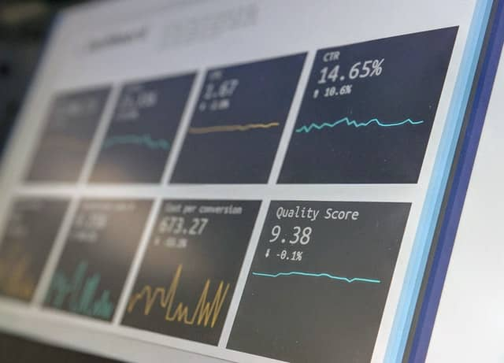

Data Science
Data Science is an integration of multiple disciplines, including statistics, software development, and business, to derive essential insights from data by carrying out controlled analysis on the data. Basically, the aim of any data science project is to derive actionable insights for the business from which the data was generated. This will help the business make improved business decisions.
Data science enables businesses to figure out patterns in large amounts of unstructured and structured datasets. This, in turn, helps businesses enhance efficiency, identify potential business opportunities, improve market advantage, and optimize costs.
Data Science can be found at the center of Personal assistants like Cortana, Siri, and Alexa. Machine learning is one of the specializations of Data science, and it is also at the core of autonomous self-driving cars, chatbots, assisted surgery robots, recommender systems in Netflix and Amazon, Health recognition machines, and spam detection algorithms in Gmail.
Data Science often involves mining huge amounts of raw data, both unstructured and structured, to find patterns and get useful insights from them. It is an interdisciplinary field with a basis in fields like computer science, machine learning algorithm development, inference, predictive analysis, and statistics.
Data Science Life Cycle
Data Acquisition: This involves collecting data based on certain business objectives
Data Pre-Processing: This involves storing data, cleaning data, data processing, and data architecture. This makes data easier to use.
Data Processing: This involves data mining, data modeling, summarizing, and clustering. This is done to create effective data.
Data Analysis: This involves performing exploratory analysis, regression, qualitative analysis, predictive analysis, and so on.
Data Visualization: This is the stage where the data scientists communicate their findings to the shareholders. It involves data visualization and data reporting. It helps businesses and policy makers make better decisions.